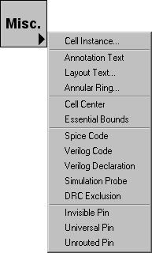

Создание узла осуществляется путем выбора узла из компонентного меню (слева).
Узлы выделены синим. После щелчка по одному из этих узлов, кликните в окне
редактирования, чтобы разместить узел.
Положение курсора выравнивается по ближайшему узлу сетки. Этой опцией можно
управлять с помощью настроек "Сетки" (в меню File
/ Prefernces..., раздел "Display", вкладка "Grid").
При размещении узла, курсор указывает на
точку привязки созданного узла. Это - центр (для простых объектов)
или местоположения центра ячейки (для образцов ячейки). Образцы ячейки могут
изменять свои точки привязки, перемещая центральный узел ячейки внутри слоя
(см.Раздел 3-3).
Помимо основных компонентов, существуют специальные входы в компонентном меню
для создания составных узлов:
-
Кнопка "Cell" отображает список экземпляров ячейки, которые могут быть
созданы (см. Раздел 3-3
<chap03-03.html>).
.
-
Кнопка "Pure" (доступная только для работы в слоях) позволяет Вам размещать
узлы чистого уровня (см. Раздел 6-10-1
<chap06-10-01.html>)
-
Кнопка "Spice" (доступная только в схемотехнике) позволяет Вам размещать
Spice примитивы (см. Раздел
9-4-3 <chap09-04-03.html>).
- Кнопка "Misc" имеет набор специальных объектов, которые могут быть
созданы
|  |
Эти объекты могут быть созданы с помощью кнопки "Misc":
- ·Cell Instance...вызывает диалоговое окно, для выбора экземпляра, который нужно разместить
(см. Раздел 3-3).
- ·Annotation Text...размещает узел, который содержит только текст (см. Раздел 6-8-1 ).
(см. Раздел 6-8-1).
- ·Layout Text...вызывает диалоговое окно, чтобы создать текст из узлов слоя
(см. Раздел 6-10-3).
- Annular Ring... вызывает диалоговое окно, для создания круговых форм
(см. Раздел 6-10-3).
- Cell Centerразмещает узел, который определяет начало координат ячейки
(см. Раздел 3-3).
- Essential Bounds размещают узел, который определяет углы основных границ ячейки
(см. Раздел 7-6-3).
|
- Spice Code Code размещает текстовый узел, который можно вставлять в блоки Spice
(см. Раздел 9-4-3).
- Verilog Code Codeразмещает текстовый узел, который можно вставлять в блоки кода Verilog
(см. Раздел 9-4-2).
- Verilog Declaration размещает текстовый узел, который можно вставлять область объявления блоков Verilog
(см. Раздел 9-4-2).
- Simulation Probe размещает узел, который может использоваться, для отображения результатов моделирования
(см. Раздел 4-12-1).
- DRC Exclusion размещает узел, который охватывает DRC ошибки и позволяет игнорировать их
(см. Раздел 9-2-5).
- Invisible Pin размещает узел невидимого пина
(см. Раздел 7-6-3).
- Universal Pin размещает узел универсального пина
(см. Раздел 7-6-3).
- Unrouted Pin размещает узел ненаправленного пина
(см. Раздел 7-6-3).